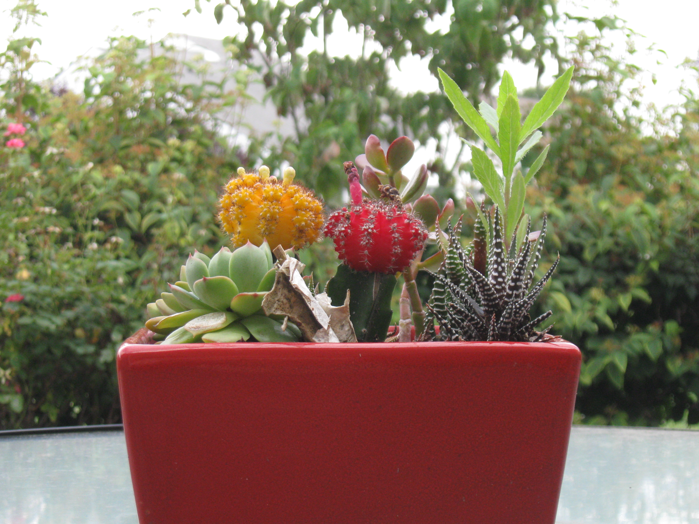
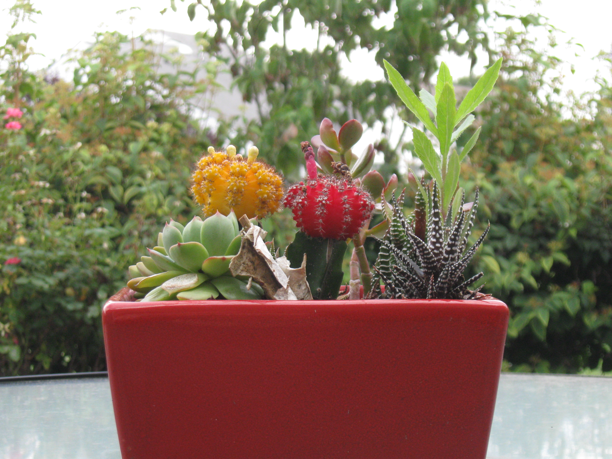

I take a lot of photos. I like to think I'm OK at it, but for a long time I always stumbled when it came to organizing them properly.
In the beginning, I used Shotwell to pull photos off my camera and into folders. This worked OK, but Shotwell is kind of big, and pretty GNOME specific, so occasionally I would use Digikam. Anyone who has used both of these knows that they sort files ever so slightly differently, for example adding leading zeros on single-digit months and days. Most of my photos stayed sorted like this, but it certainly wasn't great.
Then, I moved away from swapping between KDE and GNOME to using i3 pretty much full time. Shotwell looks a little odd in KDE, but most apps built for KDE and GNOME work great in i3, except for some rough edges. Unfortunately, without GNOME loaded, it took even longer to start up. At the time I was using exclusively spinning hard drives, exacerbating the problem.
So, eventually, I wrote a shell script.
photoorg
This is actually relatively recent for me. Photoorg didn't exist 5 years ago, and honestly it's pretty targeted at exactly my use case.
Here's how it works:
- Mount the SD card as your user
cdinto the directory you mounted it to- type
photoorg
Your photos will show up in ~/pic/YYYY/MM/DD with no name change. If the camera called it IMG_891.JPG, that's what it'll be called once it's sorted.
I wrote in an optimization for my cell phone, since it formats the date in the filename. That was the easy part. It was much harder to accommodate my other cameras, though.
Supporting Any Camera
My favorite camera is my Nikon D3200. It's an entry level DSLR, and it's pretty basic. I also have an old Canon PowerShot a590is from 2008, which I use when I'm hiking or don't want to risk dropping or breaking the DSLR.
Neither of these format filenames like the phone does. The Canon uses a format like /IMG_[0-9]{3}.JPG/, and the Nikon /DSC_[0-9]{4}.{JPG|NEF}/. As it turns out, I'm not the first person to run into this. ImageMagick has a command called identify that contained exactly what I needed.
Source Code
Here's the source to the script as it stands right now:
photoorg in envy-scripts on GitLab
You can see in there how I parsed apart the phone date syntax, and the alternate code path that uses identify first. I have some code in there to cache photos so that identify doesn't have to read the file off the SD card directly, and also an option to copy files off the SD card rather than move them.
tagsearch
I was pretty pleased with the result of photoorg, importing photos became a lot less painful. Most of my laptops have an fstab entry to let me mount the SD card as a user, which means I get the same photo import capabilities of Shotwell without needing to load half of GNOME to get there.
However, I did miss the ability to tag things. If I'm looking for some landscape photos to use somewhere, for example as the background to the desktop site (that is one of mine, just lightly edited), I would have to sift through everything to look for it. Tools like sxiv make this fairly easy, since they can provide the thumbnail view, but that doesn't include any logic to add tags to things.
That's when it dawned on me what a simple problem this is. I could use a full-blown file indexer to do the job, or I could just keep a plain text file containing every file in a directory and a list of tags associated with it. If I ever wanted to look up a file, I could just grep the second column for the text string of the tag, and grep will spit out a list of all of the files. Combine that with some careful use of ls and the path, and I could reconstruct full paths to files by just grepping a whole bunch of these tags files.
That's what eventually became tagsearch.
Tagsearch can find a file matching a tag, list the tags currently in use, find files by a tag substring, find untagged files, or show photos using sxiv based on a tag substring.
Between these two scripts, I've now completely replaced Shotwell for everything I used it for. To be clear, I still like the program and happily set it up for my grandmother, who recently migrated from iPhoto (yes, that old) to Shotwell. Digikam is also solid, though it requires a little bit more setup to get working right. Both of them have merits beyond import and tagging, but those are the only two features I ever used.
The result is far less memory usage, and far more SD cards with space for more photos.
Here are some photos out of my archives, just for fun:
 

Some of these photos were scaled down and/or cropped prior to posting, mostly to save storage space. I do still have the originals, they just seemed a little big to upload to GitHub Pages (~8-10MB each anyone?)